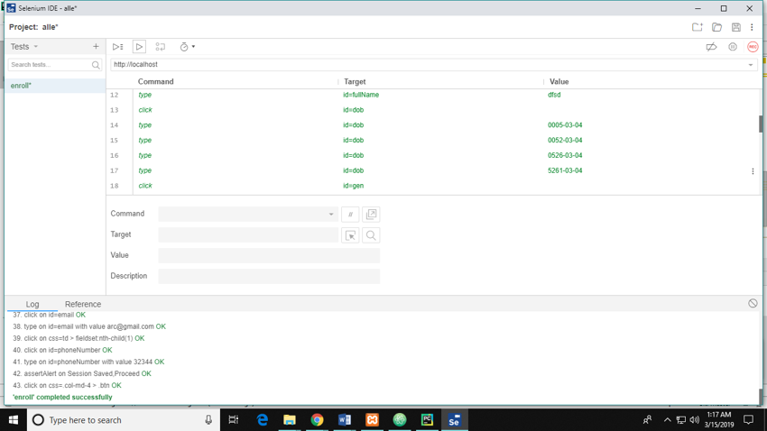
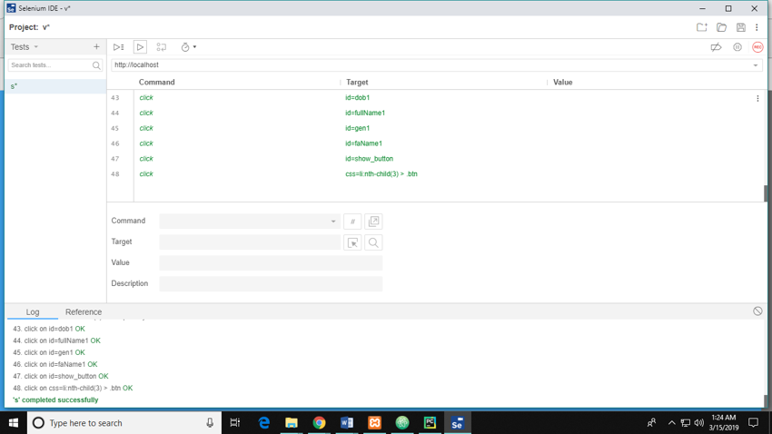

-
GENERATING UNIQUE ID FOR INDIVIDUALS USING
BIO-METRICSAUTHORS
Team Number: 14
- R. PREM
- K. KRISHNA KUMAR
- K. MANI KANDAN
- C.JERIN MAHIBHA
DEPARTMENT OF COMPUTER SCIENCE AND ENGINEERING
MEENAKSHI SUNDARARAJAN ENGINEERING COLLEGE -
OVERVIEW
- ABSTRACT
- INTRODUCTION
- PROBLEM STATEMENT
- LITERATURE SURVEY
- DRAWBACKS OF EXISTING SYSTEM
- PROJECT ARCHITECTURE
- MODULES DESCRIPTION
- UML MODELLING
- IMPLEMENTATION
- TESTING
- CONCLUSION AND FUTURE ENHANCEMENTS
- REFERENCES
- LIST OF PUBLICATIONS
-
ABSTRACT
- Traditional identification systems focus on gathering data.
- The proposed system holds privacy and protection.
- Uses Machine Learning and Cyber Security algorithms to make next generation identification system.
- The system aims at producing a 16-digit identity for each individual based on their biometrics traits.
- 16-digit Unique ID which is represented as proof for identity.
- The hash value of the UID is placed on a QR code to make it easy for daily usage.
- The identity number is masked to provide initial security from data theft.
-
INTRODUCTION
- CYBER SECURITY
- Hash mechanism is used
- Builds up masking and adds strength to UID.
-
- MACHINE LEARNING
- Machine Learning algorithm is used to extract the reference points for an individual from their physical metrics.
- Handle uncertainty associated with data and avoid misperception.
- CYBER SECURITY
-
PROBLEM STATEMENT
- Identity proof – acts as verification for some purposes like permit or state of individual.
- Proofs are made up of N-digit identification for each and every citizen.
- Working – changes as per required norms, does not have any generalized approach to verify.
- Infrastructure contains many technical loopholes that provide malicious activity .
- The common problem is data breach that happens due to some clandestine users.
- Masquerader attack is the most exploited attack in identity proof.
-
-
LITERATURE SURVEY
-
LOCAL GRADIENT HEXA PATTERN: A DESCRIPTOR FOR FACE RECOGNITION AND RETRIEVAL SOUMENDU CHARABOTY ,SATHISH KUMAR SINGH, PAVAR CHAKARABOTY
METHODOLOGY
- LOCAL GRADIENT HEXA PATTERN(LGHP).
- COMPARED WITH STATE-OF-ART DESCRIPTORS LDP,LVP,LBP TO STUDY THE FEATURES.
ADVANTAGES
- COMPUTES RELATIONSHIP EXISTING IN DIRECTIONAL DERIVATIVE PAIR.
- EXTRACTS AT VARYING LOCALITY.
- UNCONSTAINED ENVIRONMENT.
DISADVANTAGES
- COMPUTES 6 X 9B SIZE PATTERN FOR RADIUS=1
- THEROETICAL PROPOSED
-
INTEGRATING FACES AND FINGERPRINTS FOR PERSONAL IDENTIFICATION LIN HONG, ANIL JAIN
METHODOLOGY
- EIGENFACE METHOD
- MATHEMATICAL PROCESS OF PCA
- LDA
- SVD
- NEURAL NETWORK TECHNIQUES.
- MINUTIA EXTRACTION AND MATCHING.
ADVANTAGES
- INTEGRATES MULTIPLE WES CUES
- SPECIFIED FAR IS VERY SMALL PERCENT(<=1).
- FRR INCREASES WITH THE INTEGRATED SYSTEM.
DISADVANTAGES
- AVERAGE CPU TIME IS HIGHER
- WORKS GOOD FOR SMALL SET OF DATA.
- NO UNIFORMITY
-
FINGERPRINT RECONSTRUCTION: FROM MINUTIAE TO PHASE JIAN JIANG FENG, ANIL K. JAIN
METHODOLOGY
- PHASE METHOD FOR RECONSTRUCTION
- USES FM MODEL
- BUCKLING PROCESS
ADVANTAGES
- RECONSTRUCTS FINGERPRINT WITH VERY FEW SPURIOUS MINUTIAE.
- FAR IS 0% AND TAR IS 81.49%
- WITHSTAND TYPE I AND II ATTACKS
DISADVANTAGES
- MANY SPURIOUS MINUTIAE NOT INCLUDED IN ORIGINAL.
- VULNERABLE, IF PHASE IMAGE IS LEAKED
-
FINGERPRINT COMBINATION FOR PRIVACY PROTECTION SHENG LI, ALEX C. KOT
METHODOLOGY
- COMBINED MINUTIAE TEMPLATE
- TWO STAGE FINGERPRINT MATCHING PROCESS.
ADVANTAGES
- VERY LOW ERROR RATE
- PROVIDES NEW IDENTITY DIFFICULT TO DISTINGUISH.
- PROVIDES NEW VIRTUAL ID PERFORMS BETTER
DISADVANTAGES
- EASY TO HACK, IF PROCESS IS COMPRISED .
- DEPENDANT ON MINUTIAE POSTIONS.
-
BIOMETRIC BASED UNIQUE ID GENERATION AND ONE TO ONE VERIFICATION FOR SECURITY DOCUMENTS SAJAN AMBADIYILA , K S SOOREJB, V P MAHADEVAN PILLAIC
METHODOLOGY
- UID IS GENERATED BY USING THE CORE POINT OF FINGERPRINT.
- REGION OF INTEREST IS USED TO GENERATE UNIQUE MINUTIAE PATTERN.
- EACH POSITION IN ORIENTATION IS CONSIDERED AS POINCAVE INDEX.
ADVANTAGES
- SIMPLE AND COST EFFECTIVE ANTI-COUNTERFEIT SYSTEM.
- FAR AND TRR IS LOW .
- TAR AND FRR IS HIGH.
- PREVENT IMPERSONATION AND AVOID COUNTERFEITING.
DISADVANTAGES
- SOME FINGERPRINT PATTERN WORE,THUS IT CAUSES ANOMALY IN VERIFICATION.
- VULNERABLE TO ATTACK AS IT EMPLOYS ONLY FINGERPRINT.
-
HASH-ONE: A LIGHTWEIGHT CRYPTOGRAPHIC HASH FUNCTION PULIPARAMBIL MEGHA MUKUNDAN , SINDHU MANAYANKATH, CHUNGATH SRINIVASAN, MADATHIL SETHUMADHAVAN
METHODOLOGY
- SPONGE CONSTRUCTION WITH PERMUTATION FUNCTION.
- SPONGE IS AN ITERATIVE CRYPTOGRAPHIC MODEL
- PRODUCES MESSAGE DIGEST OF 160 BITS.
ADVANTAGES
- LIGHTWEIGHT
- REDUCED COMPLEXITY.
- HIGHLY RANDOM IN NATURE.
DISADVANTAGES
- DEPENDS ON THE NUMBER OF CYCLES.
- SIMILIARITIES WITH EXISTING HASH FUNCTIONS.
-
AADHAR BASED SMARTCARD SYSTEM FOR SECURITY MANAGEMENT IN SOUTH ASIA KAMTA NATH MISHRA
METHODOLOGY
- BIOMETRICS FEATURES
- IMAGE PROCESSING
ADVANTAGES
- IDENTIFY PERSON CURRENT STATE.
- KEEP THE TRACK OF ALL TRANSACTIONS.
- USED TO MONITOR PEOPLE
DISADVANTAGES
- EASIER TO STEAL IDENTITY.
- NO GENERALIZED MODEL APPROACH .
-
-
DRAWBACKS OF EXISTING SYSTEM
- Centralized in nature – central point of failure causes large destruction.
- More Constraints are followed and consistently not accepted.
- High chances for identity theft.
- Poor infrastructure.
- Insecure intermediate positions.
-
-
SYSTEM ARCHITECTURE

-
SYSTEM ARCHITECTURE
-
-
-
MODULE DESCRIPTION
- ENROLLMENT
- FACE EXTRACTION
- FINGERPRINT EXTRACTION
- UNIQUE ID GENERATION
- HASH CODE GENERATION
- QR CODE GENERATION
-
ENROLLMENT
- Verify the valid vendor.
- Gather personal as well as biometrics.
- Store enrollment ID.
- Provides successful registration with acknowledgement.
- Segregates personal and biometrics for extraction process.
-
FACE EXTRACTION
- Facial Landmarks method (algorithm-extraction).
- Extracts unique pattern.
- Conversion to bit-stream.
- Stores in cache for quick response.

-
FINGERPRINT EXTRACTION
- Minutiae point extraction method (algorithm-extraction).
- Extracts unique pattern.
- Conversion to bit-stream.
- Stores in cache for quick response.
-
UNIQUE ID GENERATION
- Takes data stored in cache.
- Computed to form N-bit UID.
- Permutation (if necessary).
- Generates two set of UID.
- Stores in database.
-
HASH CODE GENERATION
- Blake-2B (algorithm).
- Truncated to 40 bit.
- Generates two set of hash.
- Stores in database.
-
QR CODE GENERATION
- Quick response code – verification.
- Generated from hash code.
- Embedded in card.
- Scans to view details
- Stores in database.
-
-
-
UML DIAGRAM
-
USE CASE DIAGRAM

-
ACTIVITY DIAGRAM
-
CLASS DIAGRAM
-
SEQUENCE DIAGRAM
-
COLLOBORATION DIAGRAM
-
STATE CHART DIAGRAM
-
PACKAGE DIAGRAM
-
COMPONENT DIAGRAM
-
DEPLOYMENT DIAGRAM
-
-
-
SCREEN SHOTS

-
-

-


-
-
-
TESTING
- UNIT TESTING
- INTEGRATION TESTING
- FUNCTIONAL TESTING
- ACCEPTANCE TESTING
-
Testing for vendor signup and login

-
Enrollment and capturing images
 -
Verification and Qr code
 -
Sample card and mail assent

-
-
CONCLUSION
- The concept of masking UID provides entry level security to the system and makes it to resist minimal threats.
- Contributes to the unique way of representing the data of an individual which is more advanced.
- Collaborates the ideology of machine learning to the identification system
- Can be made automated to reduce error rate.
- Cloud based implementation
- Application dependent devices for data acquisition.
-
-
REFERENCES
- Local gradient hexa pattern:a descriptor for face recognition and retrieval Soumendu charaboty graduate student member IEEE.Sathish kumar singh,senior member ieee and pavar chakaraboty member IEEE VOL 28 NO:1,JAN2018.
- Integrating Faces and Fingerprints for Personal Identification Lin Hong and Anil Jain, Fellow , IEEE Transactions on pattern analysis and machine intelligence, VOL. 20, NO. 12, DECEMBER 1998.
- Fingerprint reconstruction: from minutiae to phase jianjiang feng, member, IEEE, and anil K. Jain, fellow, IEEE IEEE TRANSACTIONS ON PATTERN ANALYSIS AND MACHINE INTELLIGENCE, VOL. 33, no. 2, february 2011.
-
- Fingerprint Combination for Privacy Protection Sheng Li, Student Member, IEEE, and Alex C. Kot, Fellow, IEEE.IEEE TRANSACTIONS ON INFORMATION FORENSICS AND SECURITY, VOL.8,NO.2,FEB 2013
- Biometric based Unique ID Generation and One to One Verification for Security Documents. Sajan Ambadiyila , K S Soorejb, V P Mahadevan Pillaic. International Conference on Information and Communication Technologies (ICICT 2014)
- Hash-One: a lightweight cryptographic hash function. Puliparambil Megha Mukundan, Sindhu Manayankath, Chungath Srinivasan, Madathil Sethumadhavan. IET Information Security May 2016.
- Aadhar based smartcard system for security management in South Asia Kamta Nath Mishra International Conference on Control, Computing, Communication and Materials (ICCCCM) 2016.
-
-
LIST OF PUBLICATION
Prem.R, Krishna Kumar.K, Mani kandan.K, Mrs. C.Jerin Mahibha (2019) ‘Generating Unique Id for individuals based on biometrics’, proc of the National Conference on Advanced Computing Technologies (NCACT’18), Velammal Engineering College, 16th March 2019 (Best paper award).
-
THANK YOU!!!